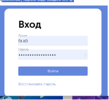

Описание
В Компании запущен в эксплуатацию новый сервис хранения и передачи паролей - Пассворк - passwork.rarus.ru.
- Сайт продукта: passwork.ru
- Файл-презентация продукта: drive.rarus.ru
Этот сервис будет полезен любому сотруднику, которому требуется безопасно хранить свои и делиться с коллегами множеством общих логинов/паролей.
Отличная документация приведена на сайте разработчика: manuals.passwork.ru. Обращайтесь, пожалуйста, в первую очередь к ней для нахождения ответов и разъяснений по вашим ситуациям.
Обязательно посмотрите видеоролик о работе с сервисом: vk.com. В нем очень подробно, понятно и наглядно показаны аспекты работы с системой!
Доступ и настройка
Пассворк доступен для любого пользователя Компании, который имеет аккаунт в Драйве. Для входа в сервис необходимо использовать логин и пароль от Драйва.
При первом логине система запросит настройку 2ФА. Используйте для этого уже привычные вам решения для Драйва (Google Authenticator, Яндекс.Ключ, KeePassXC и пр.)
Важно!
2ФА для Драйва и Пассворка НЕ СОВПАДАЮТ.
Структура хранения
Для каждого случая оптимальная структура хранения может быть разной. Обсудите этот вопрос со своими руководителями подразделений/проектов. Вы сами определяете эту структуру под ваши нужды и удобство!
Мы рекомендуем создавать сейфы организации и структуру папок в них:
- По отделам/подразделениям
- По проектам
- По клиентам
- По сервисам
Личные пароли нужно хранить в личных сейфах!
Вход в систему

Важно! Пароль надо вводить без @
Поддержка
В случае возникновения вопросов и уточнений по работе с сервисом обращайтесь в ИТ-службу вашего филиала.
В случае проблем недоступности сервиса, управлению ролями, а также с предложениями по изменению глобальных настроек системы - в службу 03.
Важно! Повторно!
Не храните ваши пароли в виде открытых и доступных файлов, таблиц в Драйве, Гугле, Яндексе и пр. облаках, на ваших ПК и телефонах.
Информация о паролях должна быть зашифрована!
Работа с персональными данными
Ужесточается закон по работе с персональными данными, увеличиваются штрафы.
Когда вы работаете с клиентскими базами, размещайте их на серверах клиентов. Если у клиента недоступен сервер и он просит прислать базу на Яндекс.Диск, просите у клиента письмо с его доменной электронной почты, с его подписью (фамилией и именем) что он разрешает разместить базу данных с персональными данными их сотрудников ООО «такое-то» на облачном сервисе и несет полную ответственность за их утечку.
Лучше конечно не размещать базы данных в открытом доступе. Пересылать через мессенджеры нельзя.